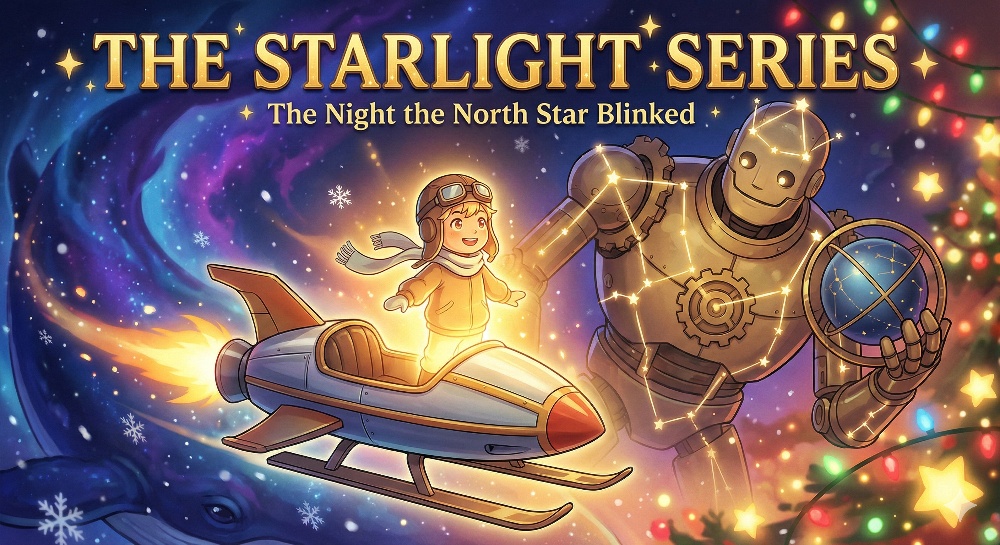
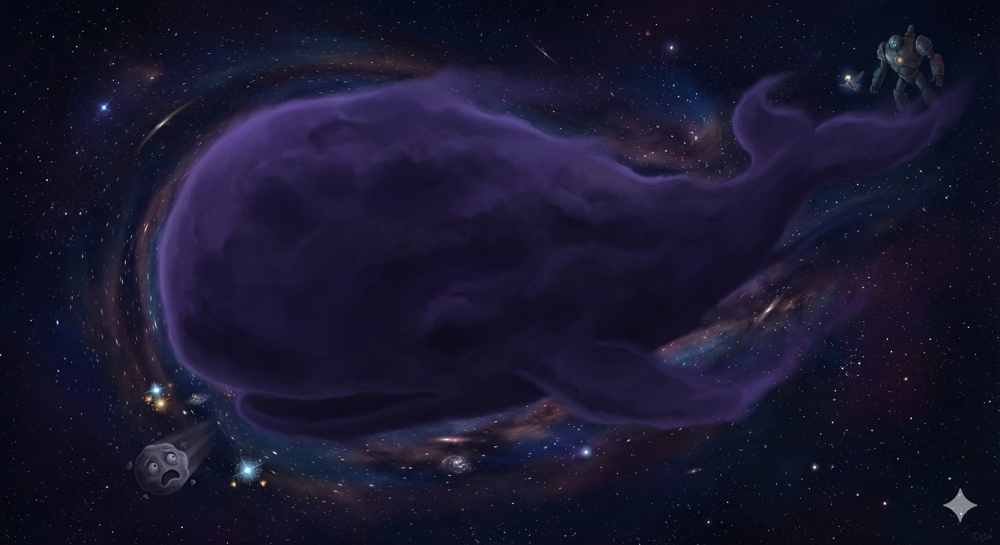
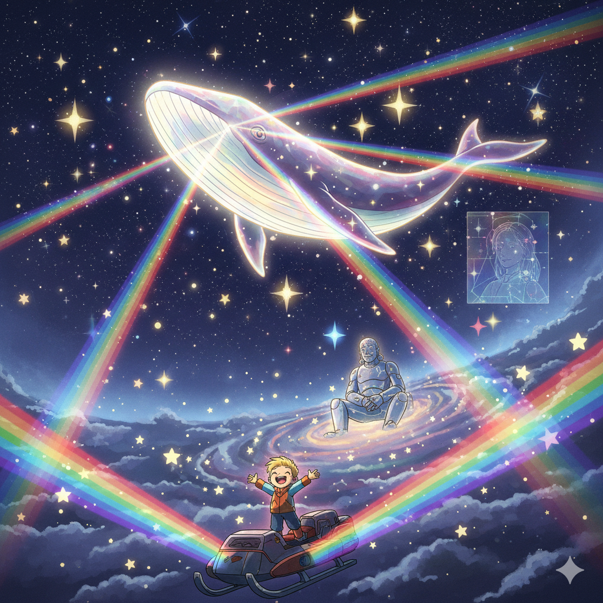
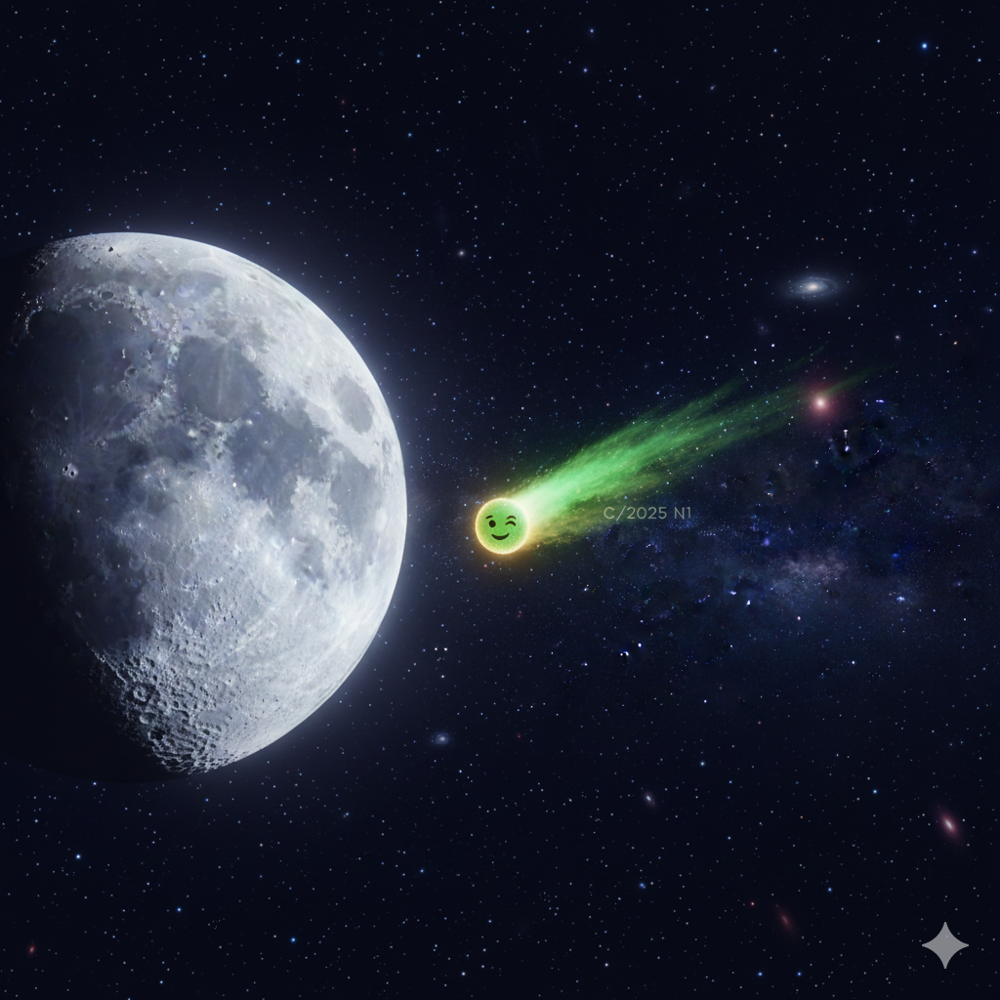

Way up high, past the tallest chimney smoke on Earth and way beyond the thickest snowy clouds, there is a place where it is always nighttime. This is the Great Cosmic Sky. It’s where the stars live, hanging like bright ornaments on a very big, very dark tree.
And holding the whole thing up was Atlas.
Atlas was bigger than a mountain and made of polished brass gears and glowing constellation lines that connected his joints. He didn’t talk much—mostly just creaked and hummed a low, brassy tune—but he had the kindest smile in the galaxy. His job was very important: he held the heavy celestial sphere on his shoulders, keeping every star, planet, and stubborn comet in its rightful place. It was heavy work, and sometimes, his grand metal shoulders slumped just a little.
Zooming around Atlas’s giant knees was the smallest light in the sky: Lux.
Lux wasn't a big, important star like Polaris, or a fiery red giant like Betelgeuse. Lux was just a Spark. A tiny, energetic nugget of pure glow.
But boy, was Lux fast. Lux flew the Foxbat Junior, the zippiest little rocket-sled in the Milky Way. It had shiny metal runners for sliding on solar winds and a nose cone painted cherry red. Lux wore a little leather aviator cap pulled snug and a scarf that trailed stardust wherever the sled zoomed.
"Check your gears, Mr. Atlas!" Lux would shout, doing a loop-the-loop around the giant's elbow. "It’s almost the Longest Night! The humans down there are going to be looking up soon!"
Atlas gave a deep, rusty chuckle that shook a few asteroids loose. "My gears are fine, Little Spark. You just mind your trajectory."
Everyone was excited. The Longest Night was the best night. It was when the sky had to be its brightest, to remind the people in the dark that the light was still there.
And then, just as the cosmic clock ticked toward midnight... something terrible happened.
The North Star—the steadiest, most reliable anchor in the whole sky—blinked.
It didn't just twinkle. It shuddered. Then, with a sad little phwip sound, like a candle being blown out... it went dark.
For a second, nobody moved. The constellations froze in their poses. The comets hit the brakes, tails dusting up static. Then, a cold wind swept through the grid. Whoosh.
Atlas groaned. A deep, grinding sound of metal on metal. Without the North Star pinning the top of the sky, the whole dome felt heavier. One of his giant brass knees buckled, just an inch.
"Mr. Atlas!" Lux zoomed closer, the Foxbat Junior sputtering. "What happened? Is a fuse blown?"
Atlas didn't answer. He was staring out into the deep, deep black between the galaxies.
"Look," the giant whispered. His voice sounded like old bells.

Lux squinted. At first, it just looked like empty space. But then, the emptiness moved. It was a shadow darker than the night around it. A massive, swimming shape, vast and smooth as a storm cloud. It drifted silently toward the Little Dipper. As it passed, the stars didn't just disappear behind it—they seemed to get sucked in.
Gulp. Another star vanished.
Panic rippled through the Milky Way. "Quick!" shouted Sirius. "Everyone, dim down! If we shine, he’ll see us! If he sees us, he’ll take our light!"
One by one, the stars squeezed their eyes shut. Hoarding their glow. The galaxy was getting darker, colder, and much, much scarier.
But Lux didn't listen. Lux kicked the Foxbat Junior into high gear. VROOOOM.
Up close, the Void-Whale was terrifying. It was huge—a swirling storm of frozen gas and ancient dust. And it was fast. Lux pulled the sled alongside the beast's massive, icy flank.
"Hey!" Lux shouted, flashing bright like a signal flare. "Hey, you! Mr. Whale!"
The Void-Whale slowed. A giant eye, swirling with dry ice fog, rolled over to look at the tiny speck.
"I AM HUNGRY,"
The voice sounded like glaciers cracking.
"I AM LEAVING. I MUST EAT THE LIGHT. THE DARK IS LONG."
"Where are you going?" Lux asked.
"AWAY. OUTSIDE. WHERE THERE ARE NO SUNS. ONLY THE DEEP FREEZE. I CANNOT RETURN. I MUST HOARD. I MUST KEEP."
Lux realized then why the Whale was so scary. It wasn't mean. It was just a traveler who had seen the emptiness between the stars. It was hoarding light because it was convinced it would never find any again. It was trapped in the belly of its own fear.
"You don't have to steal it," Lux said. "That's how rocks work. Rocks run out. Ice runs out. But light?"
Lux took a deep breath. This was the dangerous part. This was The Spark.
Lux reached into their own chest, right where the core fusion heartbeat thumped, and pulled out a handful of their own glow. It was warm, golden, and humming with a melody.
"Light isn't like stuff," Lux said. "Watch."
Lux threw the handful of light at the Whale. It splashed against the icy skin. But instead of disappearing, the light grew. It turned the gray dust into glittering gold. And Lux wasn't any dimmer. In fact, seeing the Whale glow made Lux shine even brighter.
"WHAT IS THIS MAGIC?"
"It's the Da'at Yichud," Lux grinned. "The math of connection. If I light you up, the whole sky gets twice as bright. We don't run out. We just get bigger."
Far back in the grid, Atlas saw the little gold flare. He smiled, his metal face creaking.
"Well?" Atlas rumbled to the hiding stars. "You heard the little one. Be the Spark."
Atlas took his massive hands off the celestial sphere. For a terrifying second, the stars thought they would fall. But they didn't. Because Atlas reached out—not to hold them up, but to hold them together.
"Don't just hang there," the giant commanded. "Shine."
It started with Sirius. Then Alpha Centauri. Then the Pleiades. The whole belt of Orion ignited like a string of firecrackers.

It wasn't just light. It was a song. A hum of energy that traveled from star to star. The grid wasn't a cage anymore; it was a web.
The light hit the Void-Whale—not as a weapon, but as a hug. The ice on the Whale’s back cracked. CRACK. HISSS.
Great plumes of steam hissed away, revealing not a monster, but a sleek, shimmering hull of diamond and dust. The Whale wasn't a beast; it was a prism. It caught the light from the stars, spun it around in its belly, and shot it back out in a thousand new colors.
"I AM... BEAUTIFUL,"
The Whale whispered, its voice turning from a growl into a chime.
"Yeah, you are," Lux said softly.
The light from the Whale washed over Earth. Down below, kids looking out their windows on Christmas Eve didn't just see the North Star. They saw a comet with a tail that looked like a rainbow bridge, stretching from the deep dark right to their rooftops.
"The Nellie Index is updated," whispered the wind (which sounded a lot like a calm, holographic lady named Clara). "Scarcity deleted. Abundance restored."
Lux climbed back into the Foxbat Junior. The little sled hummed, ready to go home.
"See you around, Space Cowboy," Lux waved.
The Whale—now the brightest thing in the sky—dipped its nose in a bow.
"THANK YOU, LITTLE SPARK. I WILL CARRY THIS LIGHT TO THE NEXT DARK PLACE."
And as the Whale swam away, trailing glory behind it, the North Star flickered back on. Brighter than before. Because now it knew that if it ever got tired, the other stars—and a brave little Spark—would be there to hold the line.
(P.S. Look closely at the moon tonight...)

♫ "This is Aperture" - Harry101UK
♫ "The Rainbow Connection" - The Muppets
"Who said that every wish would be heard and answered
When wished on the morning star?
Somebody thought of that, and someone believed it
Look what it's done so far..."
"Someday we'll find it, the rainbow connection
The lovers, the dreamers, and me."